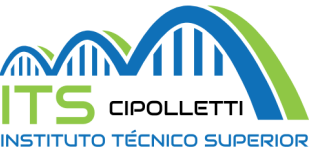

#EducaciónPúblicaGratuita
Desde el 10 de abril de 2017
Promovemos la innovación y construcción de habilidades, estableciéndonos como una
alternativa de educación superior de alta calidad.
El sello que distingue nuestra oferta educativa es la manera de aprender, que se lleva a
cabo mediante clases prácticas, laboratorios, prácticas profesionalizantes y clases virtuales,
generando un ambiente de constantes desafíos.
Ofrecemos una variedad de programas educativos para satisfacer las necesidades de nuestros estudiantes.
Técnico Superior en Desarrollo de Software Full Stack
MODALIDAD DE CURSADA SEMIPRESENCIAL 50% PRESENCIAL y 50% VIRTUAL POR LO QUE ASISTÍS 2 o 3 DÍAS POR SEMANA AL ITS
TÍTULO DE VALIDEZ NACIONAL CON CERTIFICACIONES EN COMPETENCIAS
22 MATERIAS (2.048 HORAS) 3 AÑOS DE DURACIÓN
Un “full stack developer” es un programador con un perfil técnico muy completo que conoce bien tanto lo referente a backend como lo referente a frontend.
Técnico Superior en DevOps
MODALIDAD DE CURSADA SEMIPRESENCIAL 50% PRESENCIAL y 50% VIRTUAL POR LO QUE ASISTÍS 2 o 3 DÍAS POR SEMANA AL ITS
TÍTULO DE VALIDEZ NACIONAL CON CERTIFICACIONES EN COMPETENCIAS
24 MATERIAS (2.304 HORAS) 3 AÑOS DE DURACIÓN
¿Qué significa ser un DevOps?
La palabra DevOps es una combinación de los términos ingleses development
(desarrollo) y operations (operaciones), así se llama a la unión de personas,
procesos y tecnología para ofrecer valor a los clientes de forma constante.
Es un enfoque innovador que combina el desarrollo de software y las operaciones
de TI. Esta metodología fomenta la colaboración, la automatización y la
integración continua, optimizando el ciclo de vida del desarrollo de software.
Técnico Superior en Soporte de Infraestructura de Tecnología de la Información SysAdmin
No abriremos inscripciones para esta carrera.
Desde 2017 acompañamos ocho promociones de SysAdmin y consideramos que es
momento de evolucionar a DevOps.
Test Vocacional con Inteligencia Artificial en tu Wsp?
«Elegí donde estudiar» 29 de agosto en la ciudad de General Roca
Con nuestros estudiantes de 2do año FULL STACK Mariano, Mateo y Leandro participamos de la «Expo Patagonia Universidad», organizada por el IUPA en la Asociación Española.
La Dirección del Instituto Técnico Superior Cipolletti realiza el Tercer Llamado a Concurso para la cobertura de horas cátedras, condición interino a término, correspondientes a la «Tecnicatura Superior en Desarrollo de Software Full Stack – Res. 01599/22» (Disposición N° 749/2024 DES) y a la «Tecnicatura Superior en Soporte de Infraestructura de Tecnología de la Información – Res. 00902/16» (Disposición N° 750/2024 DES).